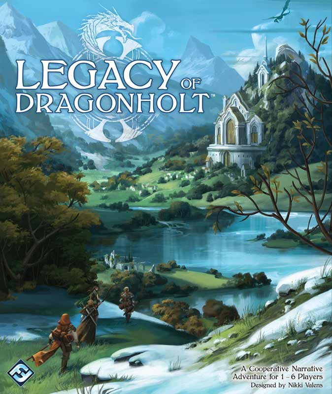
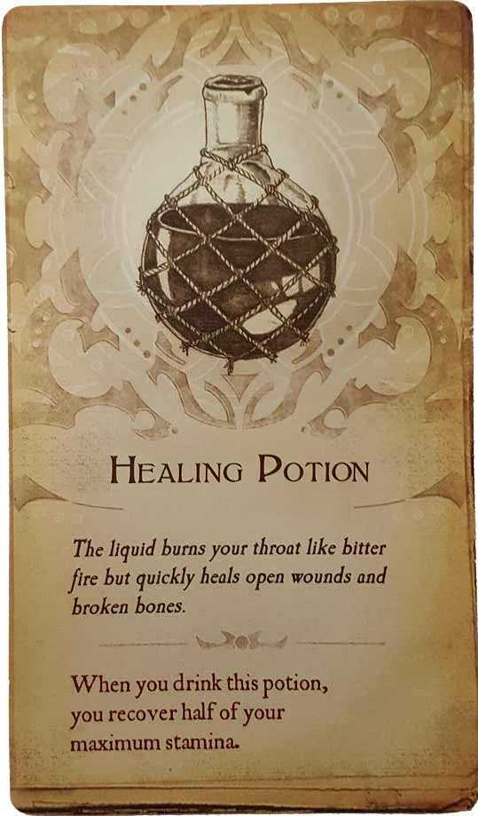
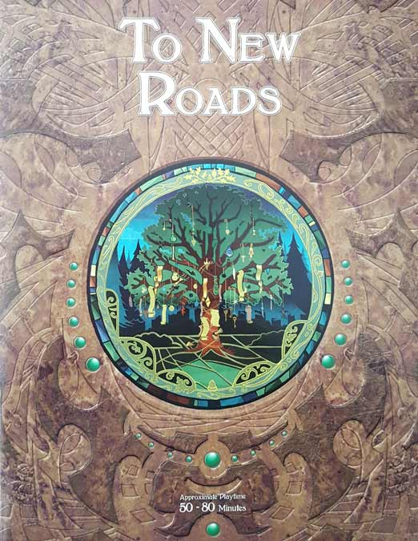
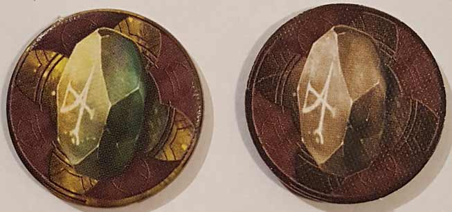
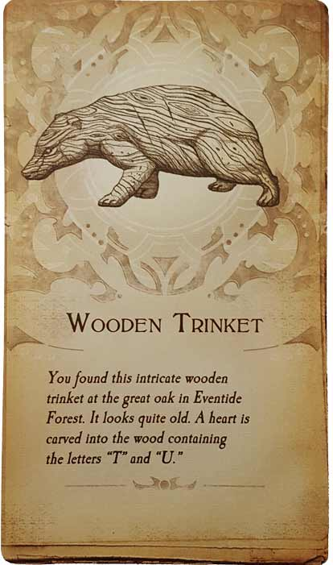

In these Legacy of Dragonholt impressions and notes, D and Will break down what they liked and/or disliked about the first quest of the game, To New Roads. In this journey, our heroes and their companions traverse the Eventide Forest en route to the village of Dragonholt. But they must be wary, as marauding bandits are close by, waiting to strike! For more on this choose-you-own-adventure game from Fantasy Flight Games, continue on below.

D’s modest impressions of Legacy of Dragonholt
 (Author’s
note: this review is meant to accompany our gameplay video and will not
go in-depth on the game’s rules. If you’re interested in learning how
the game is played, please watch the video. It’s not bad.)
(Author’s
note: this review is meant to accompany our gameplay video and will not
go in-depth on the game’s rules. If you’re interested in learning how
the game is played, please watch the video. It’s not bad.)
Reviewing Legacy of Dragonholt after only playing through the To New Roads quest book would be like reviewing a movie after only watching its first ten minutes. You might have a sense of how things will turn out, but ultimately, doing so is both silly and unfair to the product. So, I won’t be doing a proper review here; instead, I’ll just be giving my impressions on what I have experienced so far.
I feel like expectations are important for someone playing this game for the first time. While generally billed as an RPG + Choose Your Own Adventure hybrid, the game definitely skews more towards the latter, at least from what I’ve played so far. Up to this point, the RPG trappings are a neat way to incorporate multiple players and give a more meaningful sense of progression, but the opportunities to actually roleplay are almost non-existent, given the largely linear, scripted nature of the game. In other words, it’s more Oregon Trail than Baldur’s Gate. Roleplaying opportunities may start springing up once you’re able to explore the village and the game gets (presumably) less linear, but I could definitely see some people getting discouraged in the early-goings. Fortunately for me, I am a fan of CYOA stories and had the opportunity to glance inside the quest book before playing, so I knew what I was getting into and set my expectations appropriately.
Of course, the game wouldn’t work at all if the writing was poor. Fortunately, what we’ve read through thus far has been perfectly solid. Nothing remarkable yet, but overall the characters seem well-defined and likeable, and the descriptions of the setting we traveled through were evocative enough that it wasn’t hard to picture the dimly-lit forest in my mind’s eye. Perhaps the quest books should’ve included some art in order to get a clearer picture of the people and places you’re encountering, but it hasn’t been a hindrance so far, and I can appreciate the choice to favor a more economical text layout. If I have to make a criticism, it’s that the way the book is written, specifically in how it makes use of the word “you,” indicates that the game was designed with only a single player in mind. I’m not even sure that’s a flaw, really, but it does lead to some unnatural reading comprehension when who “you” is is constantly in flux.
Also, I really love the design of the whole package. They were clearly going for the classic RPG adventure book look, and I think they really nailed it. Opening the box for the first time and seeing the character sheets, rule books, quest books, and items really recalls the feeling of opening a starter box for a more traditional RPG. And the inclusion of the progress trackers you’ll need on the backs of the books is a good use of space and very handy if you’re fortunate enough to have a photocopier readily available (which I do). These sheets can also be printed from the Fantasy Flight Games website as well, so you won’t have to mark up the back covers. The rulebook is very brief, which is no surprise given how simple the game is, but it also seems to cover just about any question you might have. The character creation book is similarly thorough in regards to rules. That said, while I think the character creation book gives you enough information in order to understand the setting of Terrinoth and its inhabitants, I wouldn’t have minded if it went even further in-depth in explaining the lore of this setting. I love good lore.
So, those are my initial thoughts on the game. If we keep making videos of our adventures in and around Dragonholt, then I’ll continue to update my overall impressions of the game as my understanding of it deepens. And I hope we do keep playing, because I’m really enjoying it so far.
Will’s impressions of Legacy of Dragonholt
 As I’m sure D pointed out, it would be improper of us to write a review of Legacy of Dragonholt after only playing its first quest (To New Roads),
which I can’t imagine is more than 5-10% of the whole experience. That
being said, I’m pretty comfortable offering my thoughts on what I’ve
played so far. To start, I really want to get back to it, despite some
of the weaknesses of the first chapter. Wanting to play more of a game
is always a good sign, so no matter what, Legacy of Dragonholt has that going for it.
As I’m sure D pointed out, it would be improper of us to write a review of Legacy of Dragonholt after only playing its first quest (To New Roads),
which I can’t imagine is more than 5-10% of the whole experience. That
being said, I’m pretty comfortable offering my thoughts on what I’ve
played so far. To start, I really want to get back to it, despite some
of the weaknesses of the first chapter. Wanting to play more of a game
is always a good sign, so no matter what, Legacy of Dragonholt has that going for it.
To be honest, I wasn’t impressed with this game at all for the first 15-20 minutes or so. There’s a lot of exposition to sit through, and while I acknowledge that set-up is necessary, I can’t help but to think there’s a better way to do it than this game provides. It probably boils down to one central problem – there’s too much conversation between NPCs and too little interaction between player characters. Actually, this is a problem for the entirety of To New Roads, but especially during the beginning sections. Once the NPCs quiet down and you get moving along the road, Legacy of Dragonholt starts to come into its own.
Most of the gameplay is simple decision-making, and while that might be underwhelming to some, it works for me. Some of the decisions that we had to make early on were as simple as deciding whether to climb over a downed tree or circumvent it somehow. Moments like these may not seem too exciting, but the text of Legacy of Dragonholt makes it so that every decision feels meaningful in some way. Once combat broke out between the party and a group of bandits, I really began to notice this game’s merits. There aren’t any dice rolls or modifiers to worry about. Instead, it’s all about your skills. Are you proficient in alchemy? No? Okay, then what about dueling or military? Once you find a matching skill, you execute that kind of attack or defense. This system is simple and effective, and the narrative often makes these decisions more satisfying than you’d expect.
Some people probably won’t like that they don’t get a voice in every choice or action, as often in games like D&D, everyone can kind of chime in. I actually found this to be refreshing – my decisions are my own. And as anyone who’s ever played a tabletop RPG knows, simple choices can often become complicated, lengthy debates. In Legacy of Dragonholt, there’s none of that – decisions are made and the game goes on. This keeps the pacing quick, the playtime short, and the gameplay light. However, I should note that games with more than three players will likely take longer, with more thought going into who should take each action. Also, there aren’t as many choices and actions as I would’ve liked. I imagine if you’re playing To New Roads with 5 or 6 people, you’ll only get to make maybe three or four choices, which is simply not enough.
All in all, I have enjoyed my time with Legacy of Dragonholt so far. I understand many of my first impressions were pretty critical of the gameplay, but I must stress – it got really entertaining the more we played. I still have some concerns about the lack of actual things to do, but it seems that will improve the more we play. As for the plot, it’s a fairly standard fantasy story early on, which I find endearing. It’s almost like starting up a new D&D campaign, which is definitely what the designers were going for. So overall, I’d say so far so good. It’s not great, but I could see it getting there. I can’t wait to keep going and find out for myself, and if you want to watch us play it, check out our gameplay video. And if you like it, leave a comment so we know to continue on.
Leave a Reply
You must be logged in to post a comment.